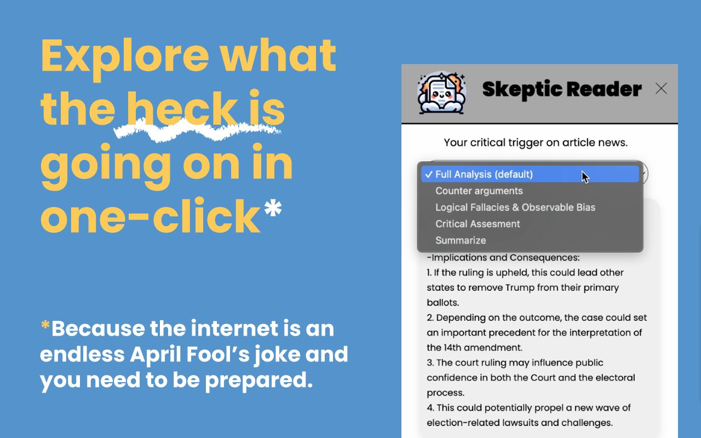
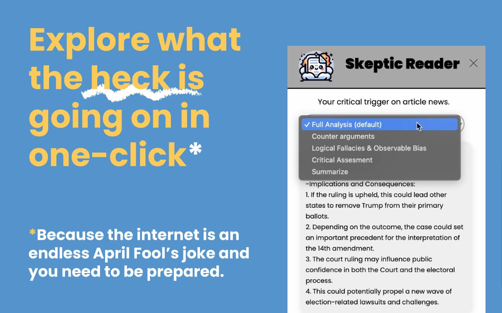
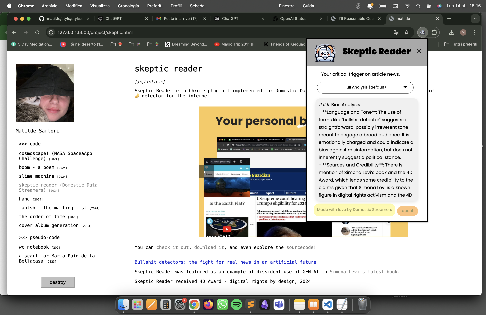

>>> code
>>> pseudo-code
>>> code
>>> pseudo-code
skeptic reader
[js,html,css]
Skeptic Reader is a Chrome plugin I implemented for Domestic Data Streamers that acts as your personal bullshit🤌 detector for the internet.
 

You can check it out, download it, and even explore the sourcecode!
Bullshit detectors: the fight for real news in an artificial future
Skeptic Reader was featured as an example of dissident use of GEN-AI in Simona Levi's latest book.
Skeptic Reader received 4D Award - digital rights by design, 2024
